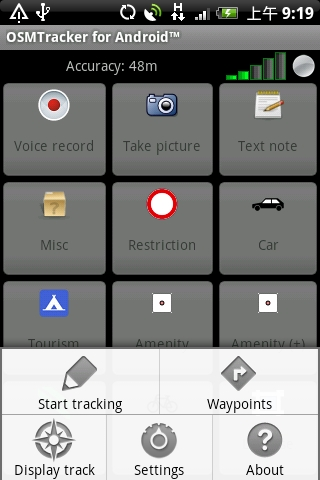
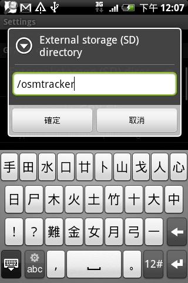
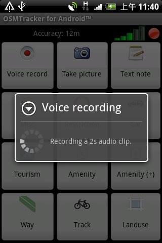
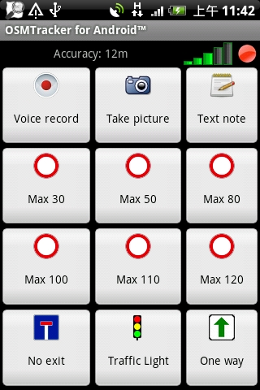
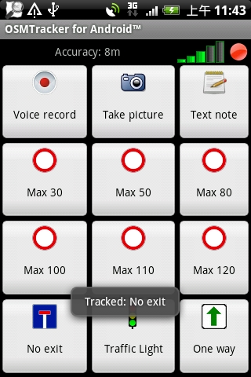
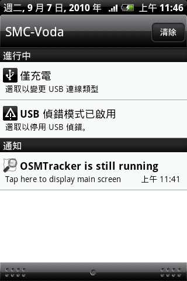

利用 Android 手機記錄行程及途經點

幸運的是，透過 Android Market 及網際網路，我們可以搜尋到更多類似的 GPS 行程記錄軟體，而且這些軟體的功能比 GPS Logger for Android 更多，操作介面亦更直觀。以下名為 OSMTracker for Android 的軟體，除了提供較直觀的操作介面外，亦容許使用者在記錄行程的過程當中進行錄音或文字記錄，甚至加入各式各樣由軟體提供的「途經點（waypoints）」，方便使用者日後查閱路線記錄時，能夠輕易得悉旅程中有哪些值得留意的景點，以及這些景點的確實位置。
軟體名稱：OSM Tracker for Android
最新版本：0.4.3
軟體授權：GNU General Public License (GPLv3)
系統支援：Android
官方網站：https://code.google.com/p/osmtracker-android/
OSMTracker for Android 軟體可透過 Android Market 直接下載及安裝。使用者亦可透過該軟體的官方網站下載軟體的 APK 檔案，然後透過 Android 手機中的檔案總管開啟 APK 檔案，便可選擇將軟體安裝至 Android 手機。執行 OSMTracker for Android 軟體後，會見到如下圖的操作介面。
若按下 Android 手機的〔MENU〕按鈕，畫面下方會出現一個功能表。這次我們點選【Settings】。

我們便會進入這個軟體的設定介面。再點選【External Storage (SD)】。
OSMTracker for Android 軟體在記錄行程的時候，同樣會將相關資料放進一個以 GPX 為副檔名的檔案（GPX, the GPS Exchange Format，較常見的 GPS 路徑記錄檔），並且將檔案儲存於 microSD 記憶卡裡。透過【External Storage (SD)】設定，使用前可檢查一下預設儲存 GPX 檔案的路徑及資料夾名稱，是否符合使用者的習慣。

正式開始行程記錄
回到主畫面，開始記錄路徑前，先確保主畫面上方是否顯示手機所在之處，能否搜尋到較強的 GPS 訊號，再按下 Android 手機的〔MENU〕按鈕，然後點選【Start tracking】。
主畫面右上方會亮起紅點，代表軟體正在記錄使用者的行程，在主畫面出現的各款按鈕亦變成白色背景，代表使用者可隨意按畫面上的按鈕。
請留意主畫面最上方的三個按鈕：〔Voice record〕、〔Take picture〕及〔Text note〕，這些按鈕在軟體的不同版面都會出現。當使用者到達某個重要景點時，點選〔Voice Record〕按鈕便可錄一段約兩秒鐘的錄音，已足夠使用者講出該景點的地名。

點選〔Take picture〕則會啟動智慧型手機的相機功能，讓使用者即時拍攝該地點的現場相片。若點選〔Text note〕則可以讓使用者輸入一段用來形容這個地點的文字。
為了方便使用者，其實這個軟體已經提供不同種類的「途經點」文字描述，點選主畫面其餘九個按鈕，軟體就會顯示集合不同種類「途經點」的版面，使用者只須點選其中一個「途經點」的按鈕，這個「途經點」便會自動成為使用者現在位置的文字描述。例如，若點選主畫面中的〔Restriction〕按鈕，便會出現以下的版面。

這個版面所顯示的是不同車速限制的「途經點」，方便駕駛隨時記下設有車速限制路牌的位置。點選這些「途經點」按鈕後，畫面下方會彈出訊息，確認軟體已將「途經點」加於路徑記錄裡。

要查閱已記下的「途經點」，可在 OSMTracker for Android 軟體的操作介面中，按下 Android 手機的〔MENU〕按鈕，並點選【Waypoints】。
軟體便會顯示已記錄的「途經點」清單。
在 OSMTracker for Android 軟體的操作介面中按下 Android 手機的〔MENU〕按鈕，並點選【Display track】，軟體則顯示使用者先前走過的路線。
值得一提的是，OSMTracker for Android 是可以在背景執行的，使用者大可按手機的〔HOME〕按鈕，選擇使用手機的其他軟體。若要返回 OSM Tracker for Android，可用手指按住畫面最上方的狀態列，然後向下滑動手指來開啟通知面板，再點選「OSMTracker is still Running」項目便可。

使用者完成行程的時候，只須在 OSMTracker for Android 軟體的操作介面中按下 Android 手機的〔MENU〕按鈕，並點選【Stop & save】，軟體便會停止路徑記錄，並且將儲存了 GPS 路徑的 GPX 檔案，儲存於 Android 手機中記憶卡指定的資料夾裡。使用者可透過記憶卡，將 GPX 檔案複製至電腦裡。
You may be interested in the following articles:
- 利用 Android 手機記錄 GPS 行程 - 2010-08-23